bookElectronics and office0.21 × 0.29 × 0.035 m · 6 faces
bookElectronics and office0.21 × 0.29 × 0.035 m · 6 facesObserved height
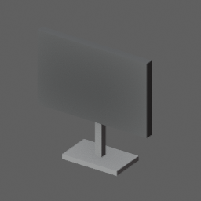
desktop computerElectronics and office0.5 × 0.15 × 0.51 m · 18 facesObserved height
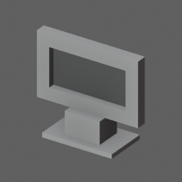
monitorElectronics and office0.58 × 0.24 × 0.5125 m · 42 facesObserved height
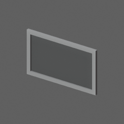
noticeboardElectronics and office1.4 × 0.045 × 0.85 m · 30 facesObserved height
 tvElectronics and office1.1 × 0.24 × 0.8025 m · 42 faces
tvElectronics and office1.1 × 0.24 × 0.8025 m · 42 facesObserved height
 armchairFurniture1 × 0.9 × 0.85 m · 54 faces
armchairFurniture1 × 0.9 × 0.85 m · 54 facesGround
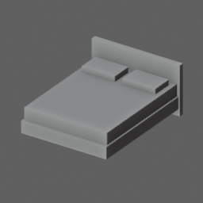
bedFurniture1.65 × 2.115 × 0.9 m · 30 facesGround
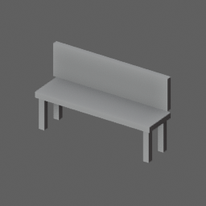
benchFurniture1.5 × 0.4225 × 0.9 m · 36 facesGround
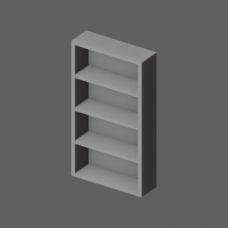
bookshelfFurniture1 × 0.32 × 1.8 m · 48 facesGround
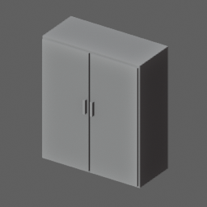
cabinetFurniture1.1 × 0.545 × 1.3 m · 30 facesGround
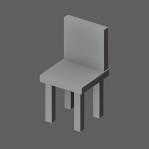
chairFurniture0.48 × 0.47 × 0.95 m · 36 facesGround
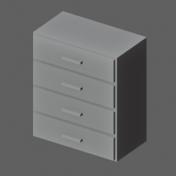
chest of drawersFurniture0.9 × 0.545 × 1.05 m · 54 facesGround
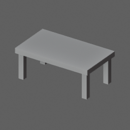
coffee tableFurniture1.05 × 0.6 × 0.42 m · 30 facesGround
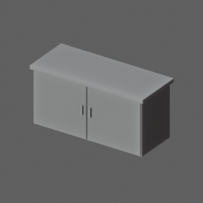
counterFurniture1.88 × 0.805 × 0.92 m · 36 facesGround
 cribFurniture0.775 × 1.8 × 1.2725 m · 132 faces
cribFurniture0.775 × 1.8 × 1.2725 m · 132 facesGround
 cushionFurniture0.5 × 0.5 × 0.14 m · 6 faces
cushionFurniture0.5 × 0.5 × 0.14 m · 6 facesObserved height
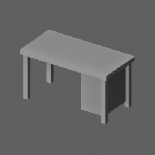
deskFurniture1.4 × 0.7 × 0.75 m · 36 facesGround
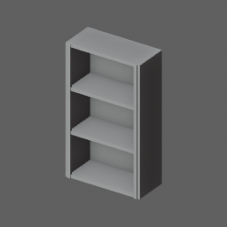
display cabinetFurniture1 × 0.465 × 1.7 m · 54 facesGround kitchen islandFurniture1.88 × 0.805 × 0.92 m · 36 faces
Ground
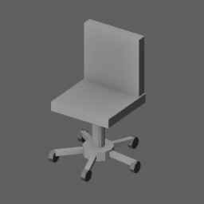
office chairFurniture0.5958 × 0.6797 × 0.95 m · 120 facesGround
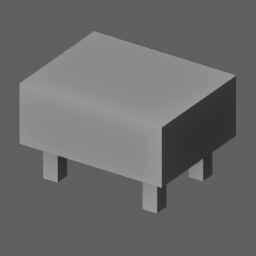
ottomanFurniture0.7 × 0.55 × 0.45 m · 30 facesGround
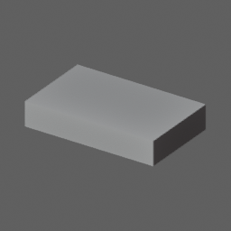
pillowFurniture0.65 × 0.4 × 0.12 m · 6 facesObserved height
 pool tableFurniture2.2 × 1.2 × 0.88 m · 54 faces
pool tableFurniture2.2 × 1.2 × 0.88 m · 54 facesGround
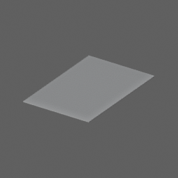
rugFurniture2 × 3 × 0.015 m · 6 facesGround
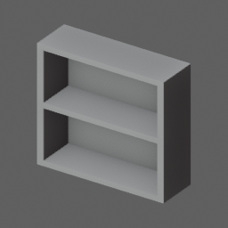
shelfFurniture1 × 0.32 × 0.9 m · 36 facesObserved height
 sofaFurniture2.05 × 0.9 × 0.85 m · 54 faces
sofaFurniture2.05 × 0.9 × 0.85 m · 54 facesGround
 stoolFurniture0.48 × 0.47 × 0.5 m · 30 faces
stoolFurniture0.48 × 0.47 × 0.5 m · 30 facesGround
 tableFurniture1.3 × 0.75 × 0.76 m · 30 faces
tableFurniture1.3 × 0.75 × 0.76 m · 30 facesGround
 wardrobeFurniture1.5 × 0.665 × 2.1 m · 30 faces
wardrobeFurniture1.5 × 0.665 × 2.1 m · 30 facesGround
 bathtubKitchen and household1.64 × 0.8 × 0.52 m · 30 faces
bathtubKitchen and household1.64 × 0.8 × 0.52 m · 30 facesGround
 binKitchen and household0.6 × 0.6 × 0.85 m · 38 faces
binKitchen and household0.6 × 0.6 × 0.85 m · 38 facesGround
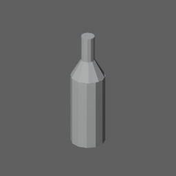
bottleKitchen and household0.086 × 0.086 × 0.29 m · 40 facesObserved height
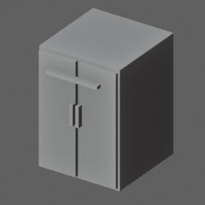
dishwasherKitchen and household0.6 × 0.69 × 0.85 m · 36 facesGround
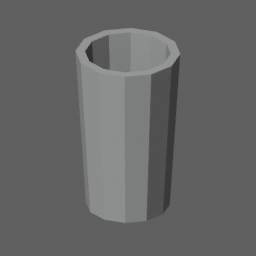
drinking glassKitchen and household0.08 × 0.08 × 0.13 m · 38 facesObserved height
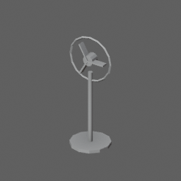
fanKitchen and household0.524 × 0.44 × 1.262 m · 124 facesGround
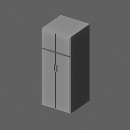
fridgeKitchen and household0.72 × 0.765 × 1.8 m · 36 facesGround
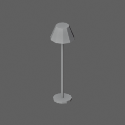
lampKitchen and household0.4565 × 0.48 × 1.6 m · 40 facesGround
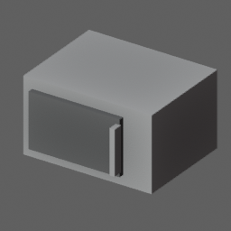
microwaveKitchen and household0.52 × 0.46 × 0.3 m · 18 facesObserved height
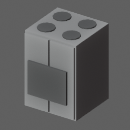
ovenKitchen and household0.65 × 0.6925 × 0.9175 m · 92 facesGround
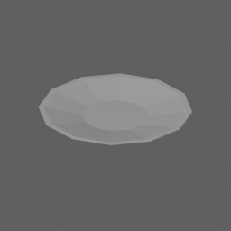
plateKitchen and household0.28 × 0.28 × 0.025 m · 38 facesObserved height
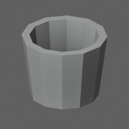
potKitchen and household0.46 × 0.46 × 0.35 m · 38 facesObserved height
 radiatorKitchen and household0.7 × 0.15 × 0.65 m · 88 faces
radiatorKitchen and household0.7 × 0.15 × 0.65 m · 88 facesGround
 showerKitchen and household0.9 × 0.9 × 2 m · 62 faces
showerKitchen and household0.9 × 0.9 × 2 m · 62 facesGround
 sinkKitchen and household0.7 × 0.52 × 0.445 m · 74 faces
sinkKitchen and household0.7 × 0.52 × 0.445 m · 74 facesObserved height
 stoveKitchen and household0.65 × 0.6925 × 0.9175 m · 92 faces
stoveKitchen and household0.65 × 0.6925 × 0.9175 m · 92 facesGround
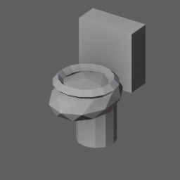
toiletKitchen and household0.43 × 0.67 × 0.76 m · 164 facesGround
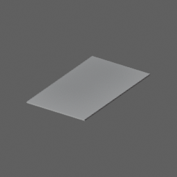
towelKitchen and household0.5 × 0.85 × 0.01 m · 6 facesObserved height
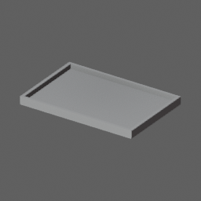
trayKitchen and household0.452 × 0.3 × 0.0305 m · 30 facesObserved height
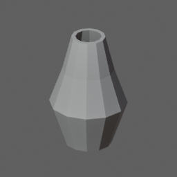
vaseKitchen and household0.3 × 0.3 × 0.45 m · 86 facesObserved height
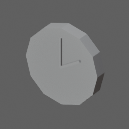
wall clockKitchen and household0.26 × 0.049 × 0.26 m · 26 facesObserved height
 washerKitchen and household0.6 × 0.6775 × 0.85 m · 44 faces
washerKitchen and household0.6 × 0.6775 × 0.85 m · 44 facesGround
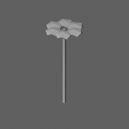
flowerPark and nature0.2673 × 0.2406 × 0.57 m · 126 facesGround
 fountainPark and nature1.8 × 1.8 × 1.15 m · 42 faces
fountainPark and nature1.8 × 1.8 × 1.15 m · 42 facesGround
 palm treePark and nature2.3321 × 2.392 × 2.2119 m · 52 faces
palm treePark and nature2.3321 × 2.392 × 2.2119 m · 52 facesGround
 planterPark and nature0.44 × 0.44 × 0.38 m · 38 faces
planterPark and nature0.44 × 0.44 × 0.38 m · 38 facesGround
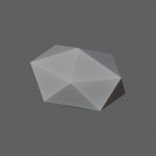
rockPark and nature1.0733 × 0.7656 × 0.7 m · 20 facesGround
 sculpturePark and nature1.36 × 0.6 × 1.58 m · 70 faces
sculpturePark and nature1.36 × 0.6 × 1.58 m · 70 facesGround
 tentPark and nature2.0147 × 2.2 × 1.0573 m · 18 faces
tentPark and nature2.0147 × 2.2 × 1.0573 m · 18 facesGround
 treePark and nature1.9972 × 2.1 × 3.6 m · 43 faces
treePark and nature1.9972 × 2.1 × 3.6 m · 43 facesGround
 ballSport and leisure0.1902 × 0.2 × 0.2 m · 80 faces
ballSport and leisure0.1902 × 0.2 × 0.2 m · 80 facesObserved height
 arcade machineStreet and architecture0.65 × 1.015 × 2 m · 42 faces
arcade machineStreet and architecture0.65 × 1.015 × 2 m · 42 facesGround
 awningStreet and architecture2 × 0.9629 × 0.4467 m · 12 faces
awningStreet and architecture2 × 0.9629 × 0.4467 m · 12 facesObserved height
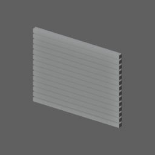
blindStreet and architecture1.3 × 0.06 × 1.03 m · 84 facesObserved height
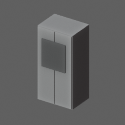
boothStreet and architecture1 × 0.805 × 2 m · 36 facesGround
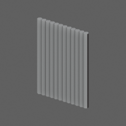
curtainStreet and architecture1.4326 × 0.13 × 2 m · 96 facesObserved height
 doorStreet and architecture1.06 × 0.17 × 2.15 m · 38 faces
doorStreet and architecture1.06 × 0.17 × 2.15 m · 38 facesGround
 escalatorStreet and architecture1.28 × 2.8397 × 2.5347 m · 72 faces
escalatorStreet and architecture1.28 × 2.8397 × 2.5347 m · 72 facesGround
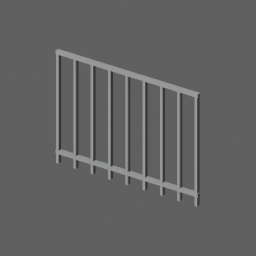
fenceStreet and architecture2.05 × 0.055 × 1.5225 m · 66 facesGround
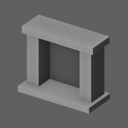
fireplaceStreet and architecture1.35 × 0.6 × 1.12 m · 30 facesGround
 flagStreet and architecture0.985 × 0.06 × 3 m · 20 faces
flagStreet and architecture0.985 × 0.06 × 3 m · 20 facesObserved height
 handrailStreet and architecture2.03 × 0.045 × 1.6212 m · 24 faces
handrailStreet and architecture2.03 × 0.045 × 1.6212 m · 24 facesGround
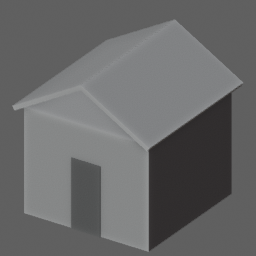
houseStreet and architecture3.2954 × 3.4 × 3.4183 m · 24 facesObserved height
 mirrorStreet and architecture1 × 0.07 × 0.8 m · 30 faces
mirrorStreet and architecture1 × 0.07 × 0.8 m · 30 facesObserved height
 pictureStreet and architecture1 × 0.07 × 0.8 m · 30 faces
pictureStreet and architecture1 × 0.07 × 0.8 m · 30 facesObserved height
 pillarStreet and architecture0.55 × 0.55 × 2.6 m · 26 faces
pillarStreet and architecture0.55 × 0.55 × 2.6 m · 26 facesGround poleStreet and architecture0.11 × 0.11 × 3.2 m · 14 faces
Ground
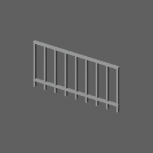
railingStreet and architecture2.05 × 0.055 × 1.0225 m · 66 facesGround
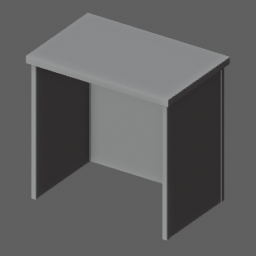
shedStreet and architecture2.6 × 1.7 × 2.46 m · 48 facesObserved height
 stairsStreet and architecture1.2 × 1.68 × 1.08 m · 36 faces
stairsStreet and architecture1.2 × 1.68 × 1.08 m · 36 facesGround
 streetlightStreet and architecture0.73 × 0.22 × 3.23 m · 26 faces
streetlightStreet and architecture0.73 × 0.22 × 3.23 m · 26 facesGround
 traffic lightStreet and architecture0.665 × 0.205 × 3.375 m · 68 faces
traffic lightStreet and architecture0.665 × 0.205 × 3.375 m · 68 facesGround
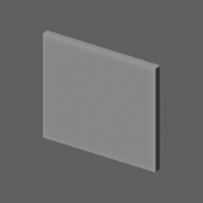
wallStreet and architecture3 × 0.18 × 2.6 m · 6 facesGround
 windowStreet and architecture1 × 0.07 × 0.8 m · 42 faces
windowStreet and architecture1 × 0.07 × 0.8 m · 42 facesObserved height
 barrelTransport and storage0.61 × 0.61 × 0.85 m · 66 faces
barrelTransport and storage0.61 × 0.61 × 0.85 m · 66 facesGround
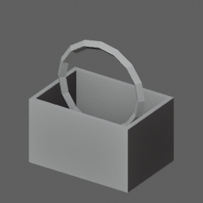
basketTransport and storage0.5 × 0.35 × 0.57 m · 94 facesGround
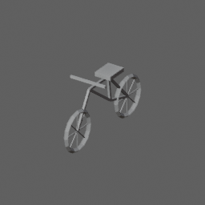
bicycleTransport and storage0.6 × 1.97 × 1.0325 m · 224 facesGround
 boatTransport and storage1.4266 × 3.5 × 0.55 m · 86 faces
boatTransport and storage1.4266 × 3.5 × 0.55 m · 86 facesGround
 boxTransport and storage0.65 × 0.55 × 0.55 m · 6 faces
boxTransport and storage0.65 × 0.55 × 0.55 m · 6 facesGround
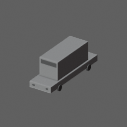
busTransport and storage2.56 × 8.03 × 3 m · 86 facesGround
 carTransport and storage1.96 × 4.23 × 1.45 m · 86 faces
carTransport and storage1.96 × 4.23 × 1.45 m · 86 facesGround
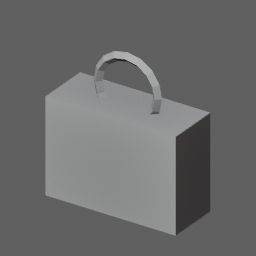
handbagTransport and storage0.35 × 0.14 × 0.382 m · 70 facesObserved height
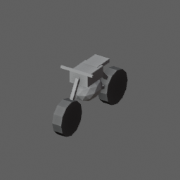
motorcycleTransport and storage0.6 × 1.9 × 1.0175 m · 162 facesGround
 truckTransport and storage2.26 × 5.63 × 2.5 m · 92 faces
truckTransport and storage2.26 × 5.63 × 2.5 m · 92 facesGround
 vanTransport and storage2.11 × 4.73 × 2.05 m · 86 faces
vanTransport and storage2.11 × 4.73 × 2.05 m · 86 facesGround
 shop signWorkshop retail and medical0.6 × 0.051 × 0.4 m · 12 faces
shop signWorkshop retail and medical0.6 × 0.051 × 0.4 m · 12 facesObserved height